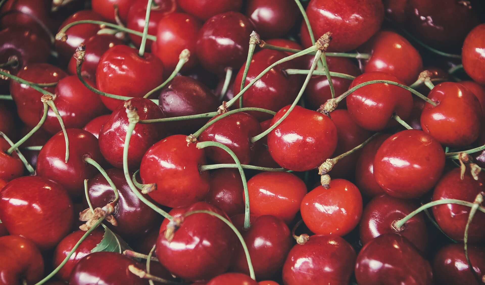
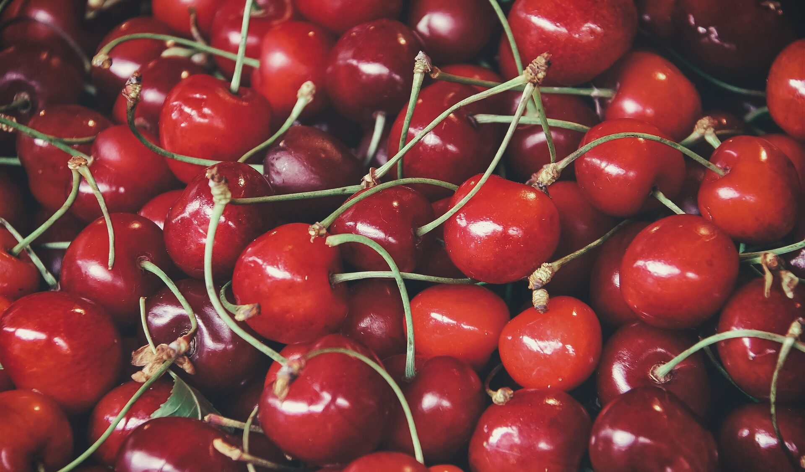

Acumulación de frío: ¿Por qué es clave?
Agosto 2024¿Cómo medir el frío efectivo y tomar decisiones sobre variedades?
 

Asesoramos a productores y exportadores para alcanzar altos estándares, optimizar procesos y maximizar resultados en el rubro frutícola.
Solicita tu presupuesto
Apoyo personalmente a productores y exportadores para lograr altos estándares, eficiencia y éxito en mercados internacionales.
Mi asesoría es directa, de persona a persona, y abarca desde la planificación, control productivo y uso de tecnologías, hasta el acompañamiento en cosecha, exportación y postcosecha.
Comprometido con la investigación aplicada y la mejora continua. Sigo incorporando nuevas tecnologías, soluciones digitales y estrategias agronómicas que marcan la diferencia en la rentabilidad y calidad de tus cerezas.
Solicita una asesoría personalizada
¿Cómo medir el frío efectivo y tomar decisiones sobre variedades?
Resultados recientes de uso de cobertores plásticos en cerezas chilenas.

Apoyo en la optimización de procesos, planificación y control en huertos y la implementación de tecnologías agrícolas y/o digitalización.

Cumplimiento de normativas agricolas, certificaciones, acceso a mercados internacionales y acompañamiento durante la temporada de exportación.

Aseroría en adopción de herramientas tecnológicas para control de calidad, trazabilidad, análisis de datos y gestión de recursos hídricos.
 Más de 26 años de gran experiencia en cultivo, manejo y exportación de cerezas.
Más de 26 años de gran experiencia en cultivo, manejo y exportación de cerezas.
 Casos de éxito comprobados en las principales zonas productoras del pais
Casos de éxito comprobados en las principales zonas productoras del pais
 Decisiones con datos reales mejoran eficacia, calidad y normas mundiales.
Decisiones con datos reales mejoran eficacia, calidad y normas mundiales.
 Contamos con red de confianza sectorial y apoyo constante en todo el país.
Contamos con red de confianza sectorial y apoyo constante en todo el país.
O escríbenos a contacto@jorara.cl o WhatsApp +56 9 1234 5678.